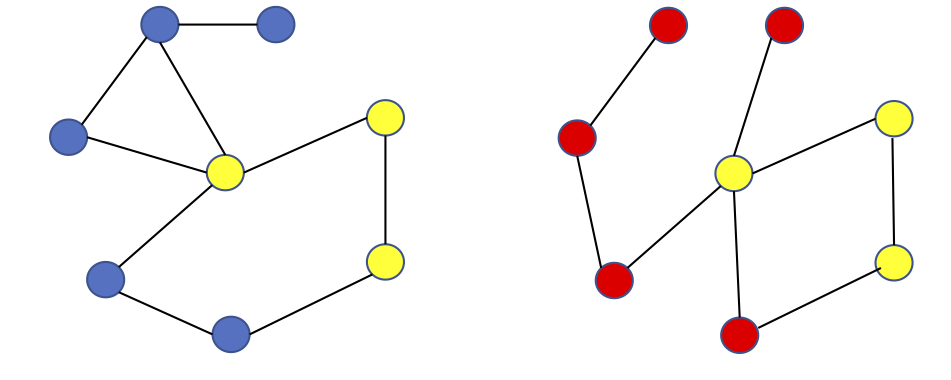
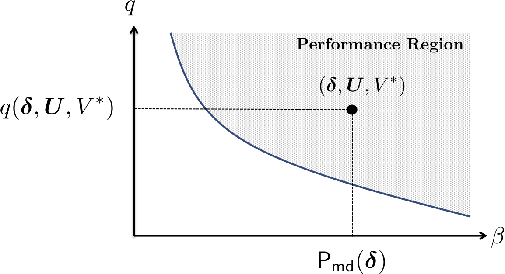
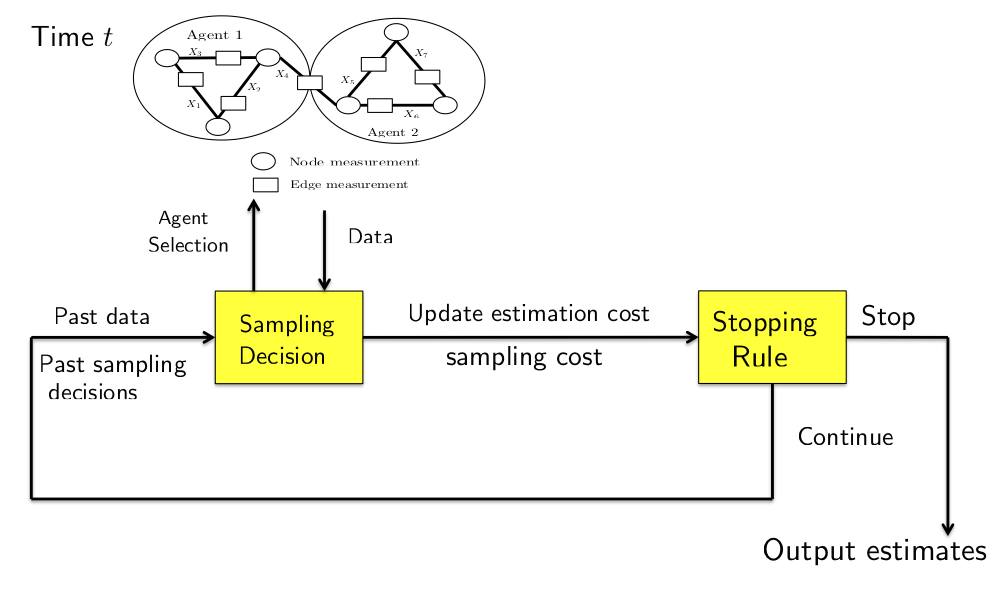

Research Projects
Structure Learning in Graphical Models
- Information-theoretic analysis of joint structure recovery of structurally similar graphs.
- Applications to analyzing data in domains like neuroscience, technological infrastructures, and biological networks.
Secure Inference
-
An optimal Bayesian parmeter estimation framework is developed for models that are vulnerable to an external adversary or unknown defects. The framework is extended to a distributed implementation to accommodate large scale and efficient applications (e.g., power grids).
-
Applications that have been investigated include state estimation in power grids under potential changes in the model (e.g., line outages) and parameter estimation from a stream of data under causative attacks, i.e., when some components of the data may be compromised by an adversary to degrade estimation performance. An asymptotically optimal scalable approach to isolate the compromised data from large dimensional data is also proposed.
-
Controlled Sensing
-
In this project, multi-agent networks are considered in which state parameters can be distributed across the agents, with each agent observing only a subset of unknown parameters and each parameter may be observed by multiple agents. Under the restric- tion on the number of agents that could collect a new observation at a time, sequential estimation rules based on Fisher information and interaction among agents are devel- oped that leverage the past data to make decisions at the current time about whether to continue sampling and dynamic selection of agents to collect the new data from.
-
This network model is relevant to various domains like power systems and Internet of Things in healthcare, where the different health care monitoring devices may be observing common parameters (e.g., blood flow and heart rate) and form an interactive network for applications like remote health monitoring. The theory developed aligns closely with the field of active learning and similar problems in the non-parametric domain can be formulated.
-